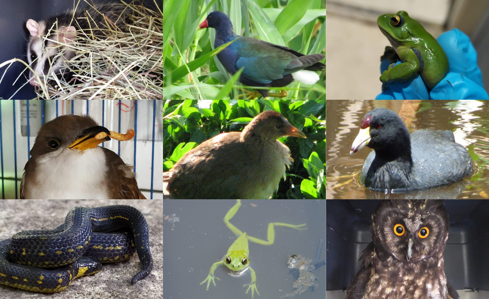
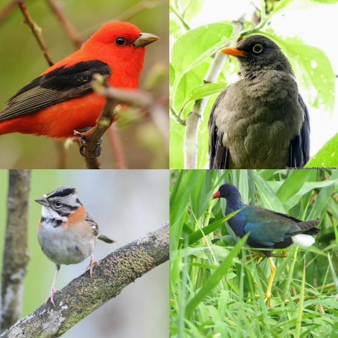
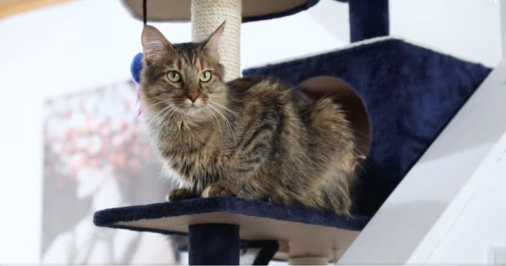
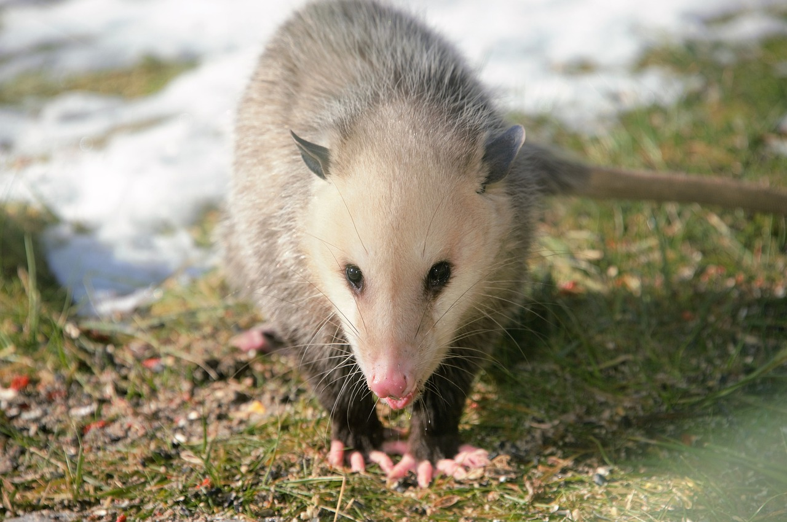
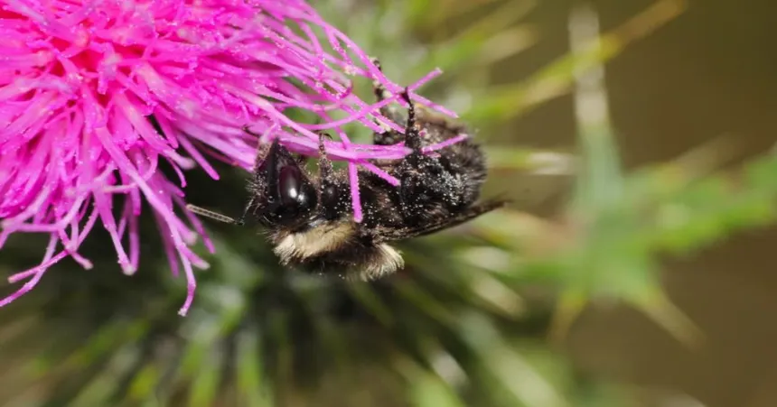
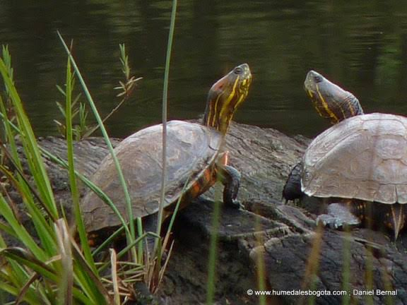
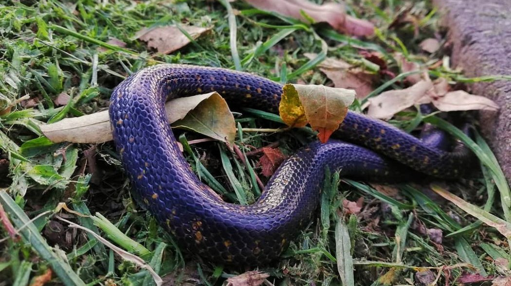
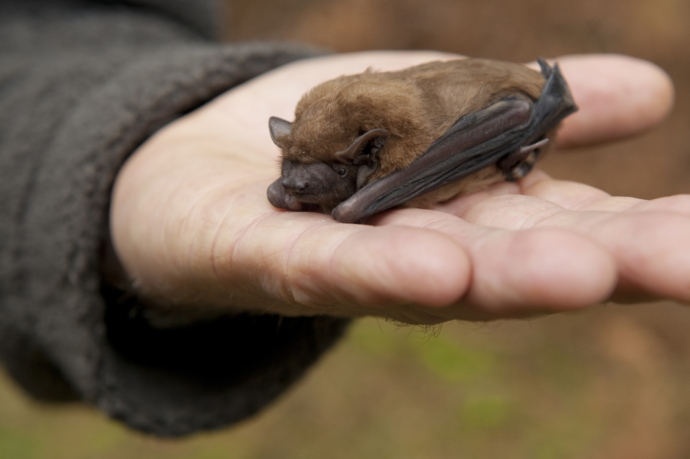

Una voz para quienes no pueden hablar.
Cada día cientos de animales necesitan ayuda. Algunos están perdidos. Otros resultan heridos. Muchos hacen parte de la fauna silvestre y simplemente necesitan que respetemos su espacio. Aprende cómo actuar correctamente y conoce los canales adecuados para proteger la vida animal en Bogotá.
Explorar la guía
Cuidarlos también es cuidar Bogotá.
Los animales hacen parte del equilibrio de nuestra ciudad. Desde los perros y gatos que viven con nosotros, hasta aves, zarigüeyas, abejas y murciélagos que habitan nuestros parques, humedales y cerros. Con pequeñas acciones podemos proteger su vida y contribuir a una ciudad más respetuosa con todas las especies.
¿Qué animal necesita tu ayuda?
Selecciona una especie para conocer las recomendaciones y los canales de atención.

¿Encontraste un perro que necesita ayuda?
No todos los perros que están solos se encuentran abandonados. Algunos pueden estar perdidos, mientras que otros requieren atención por encontrarse heridos o en una situación de riesgo. Antes de actuar, observa su comportamiento y procura mantener la calma.
❤️ ¿Qué puedes hacer?
- Acércate con calma, evitando movimientos bruscos.
- Si es seguro hacerlo, revisa si tiene placa o algún dato de identificación.
- Si parece desorientado, intenta mantenerlo en un lugar seguro mientras buscas ayuda.
- Si está herido, comunícate con las entidades competentes.
- Si puedes hacerlo sin riesgo, ofrécele agua mientras recibe atención.
🚫 Evita
- Golpearlo o espantarlo.
- Perseguirlo si intenta huir.
- Manipular heridas sin conocimientos básicos.
- Poner en riesgo tu seguridad o la del animal.
🐾 ¿Sabías que?
Muchos perros reportados como perdidos logran regresar con sus familias gracias a la colaboración de los ciudadanos y a la difusión oportuna de la información.
📍 ¿Dónde puedes buscar ayuda?
Si el perro se encuentra herido, abandonado o en una situación de riesgo, puedes consultar los canales oficiales del Instituto Distrital de Protección y Bienestar Animal (IDPYBA) para recibir orientación sobre la ruta de atención correspondiente.
Ir al sitio oficial
¿Encontraste un ave?
Muchas aves hacen parte de los parques, humedales y cerros de Bogotá. Si encuentras una herida, desorientada o que no puede volar, actuar con tranquilidad puede aumentar sus posibilidades de sobrevivir.
❤️ ¿Qué puedes hacer?
- Observa si realmente necesita ayuda antes de intervenir.
- Si está herida, mantenla en un lugar tranquilo y seguro mientras solicitas orientación.
- Evita que perros o gatos se acerquen.
- Comunícate con las autoridades ambientales si requiere rescate.
🚫 Evita
- Alimentarla sin conocer su especie.
- Intentar curarla con medicamentos caseros.
- Mantenerla como mascota.
- Liberarla si presenta heridas o no puede volar.
🕊️ ¿Sabías que?
Bogotá alberga cientos de especies de aves entre residentes y migratorias. Muchas ayudan a controlar insectos, dispersar semillas y mantener el equilibrio de los ecosistemas urbanos.
📍 ¿Dónde puedes buscar ayuda?
Si encuentras un ave herida, atrapada o en riesgo, comunícate con las autoridades ambientales para recibir orientación sobre el manejo adecuado.

¿Encontraste un gato que necesita ayuda?
Los gatos suelen esconderse cuando sienten miedo o están heridos. Antes de intervenir, observa su comportamiento y verifica si realmente necesita ayuda o si se encuentra explorando su entorno.
❤️ ¿Qué puedes hacer?
- Acércate lentamente.
- Habla con voz tranquila.
- Si parece perdido, pregunta a los vecinos.
- Si está herido, busca apoyo de las autoridades competentes.
- Si puedes hacerlo con seguridad, ofrece agua.
🚫 Evita
- Perseguirlo.
- Obligarlo a salir de su escondite.
- Manipularlo si está agresivo.
- Poner en riesgo tu seguridad.
🐾 ¿Sabías que?
Muchos gatos regresan solos a casa. Antes de asumir que fue abandonado, verifica si tiene identificación o consulta con vecinos del sector.
📍 ¿Dónde puedes buscar ayuda?
Aquí agregaremos los canales oficiales del IDPYBA y las rutas de atención para animales domésticos.

¿Encontraste una zarigüeya?
Las zarigüeyas son animales silvestres fundamentales para el equilibrio del ecosistema. Son tímidas, ayudan al control natural de plagas y normalmente evitan el contacto con las personas. Si encuentras una, lo mejor que puedes hacer es permitir que continúe su camino o solicitar orientación si está herida.
❤️ ¿Qué puedes hacer?
- Mantén una distancia prudente.
- Permite que continúe su camino si no está en peligro.
- Si está herida o atrapada, comunícate con la autoridad ambiental.
- Mantén alejados a perros y gatos mientras llega la ayuda.
- Si lleva crías, evita separarlas de su madre.
🚫 Evita
- Intentar capturarla.
- Golpearla o espantarla.
- Alimentarla.
- Llevarla a tu casa.
- Creer que es un animal agresivo.
🌱 ¿Sabías que?
Las zarigüeyas ayudan al equilibrio ambiental al consumir insectos, pequeños animales y frutos. Además, rara vez representan un peligro para las personas y prefieren huir antes que atacar.
📍 ¿Dónde puedes buscar ayuda?
Si encuentras una zarigüeya herida, atrapada o en riesgo, comunícate con las autoridades ambientales competentes para recibir orientación y evitar poner en peligro al animal o a sus crías.

¿Encontraste un enjambre de abejas?
Las abejas cumplen un papel fundamental en la polinización de plantas, árboles y cultivos. Generalmente no atacan si no se sienten amenazadas. Ante un enjambre, lo más importante es mantener la calma y permitir que personal capacitado intervenga cuando sea necesario.
❤️ ¿Qué puedes hacer?
- Mantén una distancia segura del enjambre.
- Evita que otras personas o mascotas se acerquen.
- Si representa un riesgo para la comunidad, informa a las autoridades competentes.
- Permite que profesionales realicen el manejo del enjambre.
🚫 Evita
- Lanzar agua, piedras o cualquier objeto.
- Intentar retirar el enjambre por tu cuenta.
- Usar humo, insecticidas o fuego.
- Alterar el comportamiento de las abejas.
🌼 ¿Sabías que?
Gran parte de las plantas que consumimos dependen de los polinizadores. Las abejas son esenciales para mantener la biodiversidad y la producción de muchos alimentos.
📍 ¿Dónde puedes buscar ayuda?
Si un enjambre representa un riesgo para las personas, comunícate con las autoridades competentes para recibir orientación sobre el procedimiento adecuado.

¿Encontraste una tortuga?
Las tortugas requieren hábitats adecuados para sobrevivir. Muchas de las que se encuentran en parques o humedales fueron abandonadas por personas que las tuvieron como mascotas. Si encuentras una tortuga en una situación de riesgo, actuar de forma responsable puede ayudar a proteger su vida.
❤️ ¿Qué puedes hacer?
- Observa si realmente se encuentra en peligro.
- Si está en una vía o zona insegura, evita que sea atropellada sin ponerte en riesgo.
- Comunícate con las autoridades ambientales para recibir orientación.
- Si fue una mascota, busca apoyo antes de liberarla.
🚫 Evita
- Liberarla en humedales, ríos o lagunas por iniciativa propia.
- Manipularla innecesariamente.
- Mantenerla como mascota sin las condiciones adecuadas.
- Alimentarla con comida no apropiada.
🐢 ¿Sabías que?
Muchas tortugas encontradas en espacios públicos fueron abandonadas. Liberarlas en cualquier cuerpo de agua puede afectar a las especies nativas y alterar el equilibrio del ecosistema.
📍 ¿Dónde puedes buscar ayuda?
Si encuentras una tortuga herida, abandonada o en riesgo, solicita orientación a las autoridades ambientales antes de moverla o liberarla.

¿Encontraste una serpiente?
Las serpientes hacen parte de los ecosistemas y cumplen un papel importante en el control natural de roedores y otras especies. La mayoría evita el contacto con las personas y solo actúa para defenderse cuando se siente amenazada.
❤️ ¿Qué puedes hacer?
- Mantén una distancia segura.
- Permite que el animal continúe su camino si no representa un riesgo.
- Mantén alejados a niños y mascotas.
- Si está en una zona urbana o representa un peligro, comunícate con las autoridades ambientales.
🚫 Evita
- Intentar capturarla.
- Golpearla o matarla.
- Arrojar objetos para espantarla.
- Manipularla sin experiencia.
🌿 ¿Sabías que?
Las serpientes ayudan a controlar naturalmente poblaciones de roedores, contribuyendo al equilibrio de los ecosistemas y reduciendo la propagación de algunas plagas.
📍 ¿Dónde puedes buscar ayuda?
Si encuentras una serpiente en una situación de riesgo o en un lugar donde pueda representar un peligro, busca orientación de las autoridades ambientales y evita intervenir directamente.

¿Encontraste un murciélago?
Los murciélagos son animales silvestres protegidos que cumplen un papel fundamental en los ecosistemas. La mayoría son insectívoros, ayudan a controlar plagas de forma natural y, en algunas especies, contribuyen a la polinización y dispersión de semillas. Si encuentras uno, lo más importante es mantener la calma y evitar el contacto directo.
❤️ ¿Qué puedes hacer?
- Mantén una distancia prudente.
- Si está dentro de una vivienda, abre puertas o ventanas para facilitar su salida si puede volar.
- Si está herido o no puede volar, informa a las autoridades ambientales.
- Mantén alejados a niños y mascotas.
- Permite que personal capacitado realice el rescate cuando sea necesario.
🚫 Evita
- Tocarlo con las manos.
- Intentar capturarlo.
- Golpearlo o lastimarlo.
- Usar venenos o insecticidas.
- Manipularlo sin protección ni orientación especializada.
🌙 ¿Sabías que?
Un solo murciélago insectívoro puede consumir cientos de insectos en una noche. Gracias a ellos se controla de manera natural la población de mosquitos y otras especies, contribuyendo al equilibrio ambiental de la ciudad.
📍 ¿Dónde puedes buscar ayuda?
Si encuentras un murciélago herido, atrapado o en una situación de riesgo, comunícate con las autoridades ambientales para recibir orientación sobre la atención adecuada.
¿Necesitas reportar un animal?
Dependiendo de la situación, diferentes entidades pueden brindarte orientación. Selecciona la opción que mejor describa el caso.
Perros y gatos
Consulta los canales del Instituto Distrital de Protección y Bienestar Animal (IDPYBA) para reportar animales domésticos en condición de abandono, maltrato o riesgo.
Fauna silvestre
Si encontraste una zarigüeya, ave, murciélago, serpiente, tortuga u otra especie silvestre, consulta los canales oficiales de la Secretaría Distrital de Ambiente.
Emergencias
Si existe un riesgo inmediato para una persona o un animal, comunícate con la Línea de Emergencias 123.
Cada pequeña acción puede salvar una vida.
Bogotá también pertenece a quienes vuelan, caminan, polinizan y mantienen el equilibrio de nuestros ecosistemas. Protegerlos es una responsabilidad compartida y una forma de construir una ciudad más consciente, más verde y más humana.
Volver al Observatorio“La forma en que tratamos a los animales también habla de la ciudad que queremos construir.”